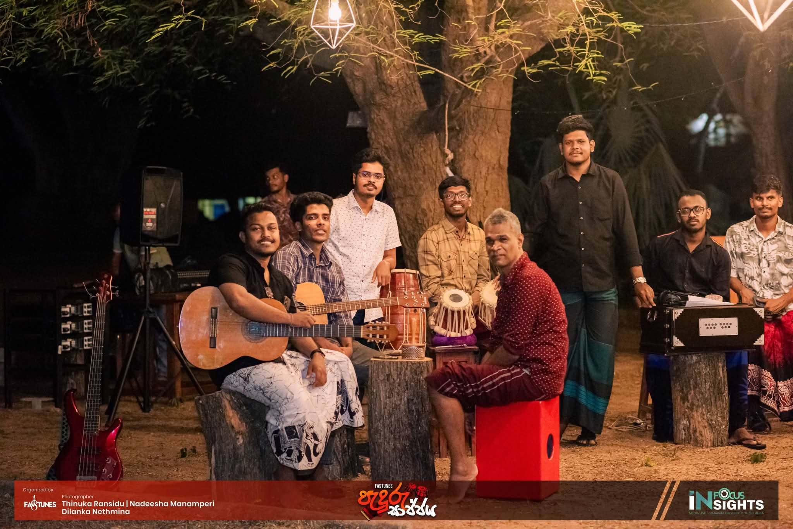
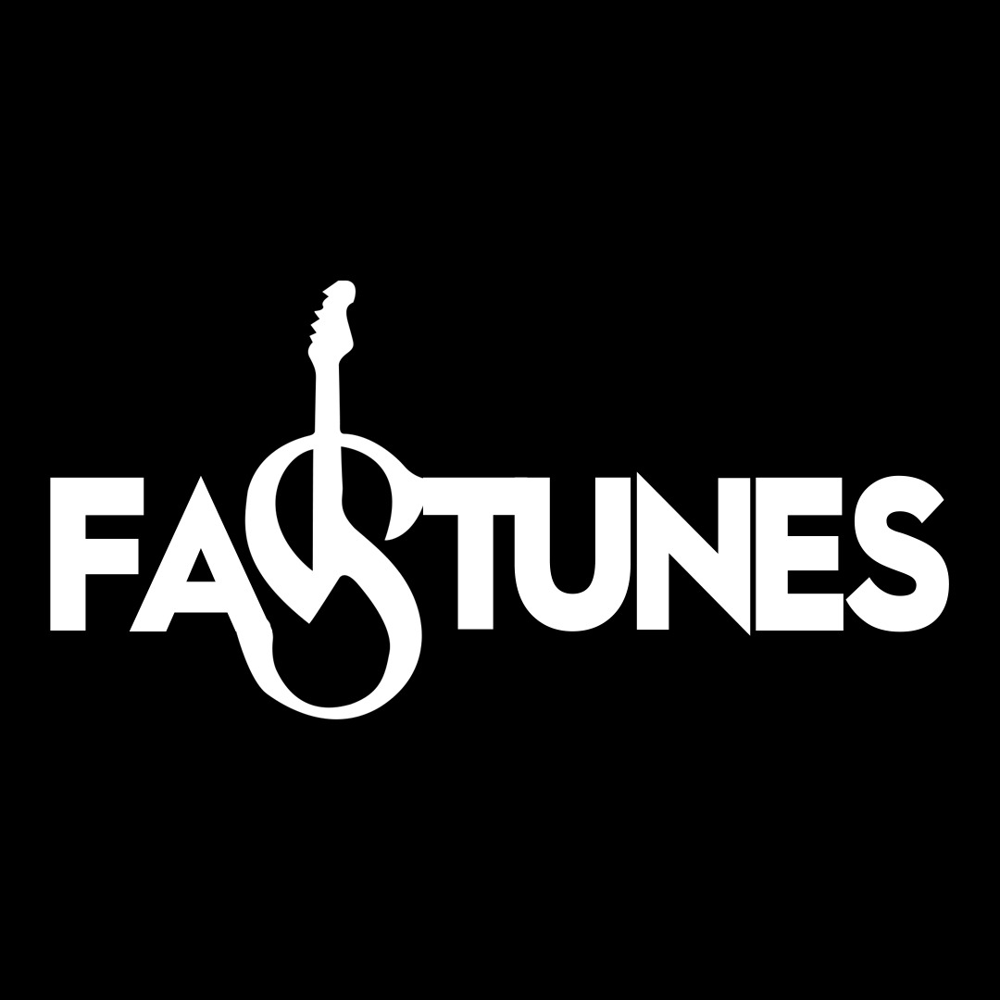

About Me
I am a results-driven Science graduate specializing in Chemistry and Statistics, with practical industry experience in quality control and compliance within the tea sector[cite: 4]. I am a certified ISO 22000:2018 & FSSC 22000 Internal Auditor with additional training in HACCP, GMP, and Lean Six Sigma methodologies[cite: 5]. Beyond my academic and professional life, I am deeply passionate about music and community service, proudly serving as the President of the Fastunes Music Society (2025-2026) and as an active member of the Rotaract Club.
Experience
Quality Controller
Venture Tea (PVT) Ltd [cite: 14] | Current Employment [cite: 16]
- Monitor and enforce quality standards in tea processing operations[cite: 15].
- Ensure compliance with applicable food safety and quality certification requirements[cite: 17].
- Conduct quality assessments and coordinate with production teams for corrective actions[cite: 18].
Education
B.Sc. in Applied Sciences (Chemistry & Statistics) [cite: 20]
Rajarata University of Sri Lanka [cite: 21] | Aug 2022 - Mar 2026 [cite: 22]
Relevant coursework: Environmental Chemistry, Statistical Analysis, Data Modelling, Research Methods[cite: 23].
Research Projects
- Chemical Environmental Analysis: Determined nitrate concentration in acid rainwater using UV-Visible Spectrometry[cite: 32].
- Statistical Analysis: Analyzed nitrate-induced acidity and predicted corrosion risk on limestone monuments in Anuradhapura District[cite: 33].
Extracurriculars & Leadership
- President, Fastunes Music Society (2025-2026): Led university musical initiatives and events.
- Rotaract Club Member: Actively engaged in community service and youth leadership development.
- Music: Sangeeth Visharada (Instrumental) - Bhatkhande Sangit Vidyapith, India[cite: 41].
- Sports Leadership: Winner of University Athletics & Hockey Competitions[cite: 40].


